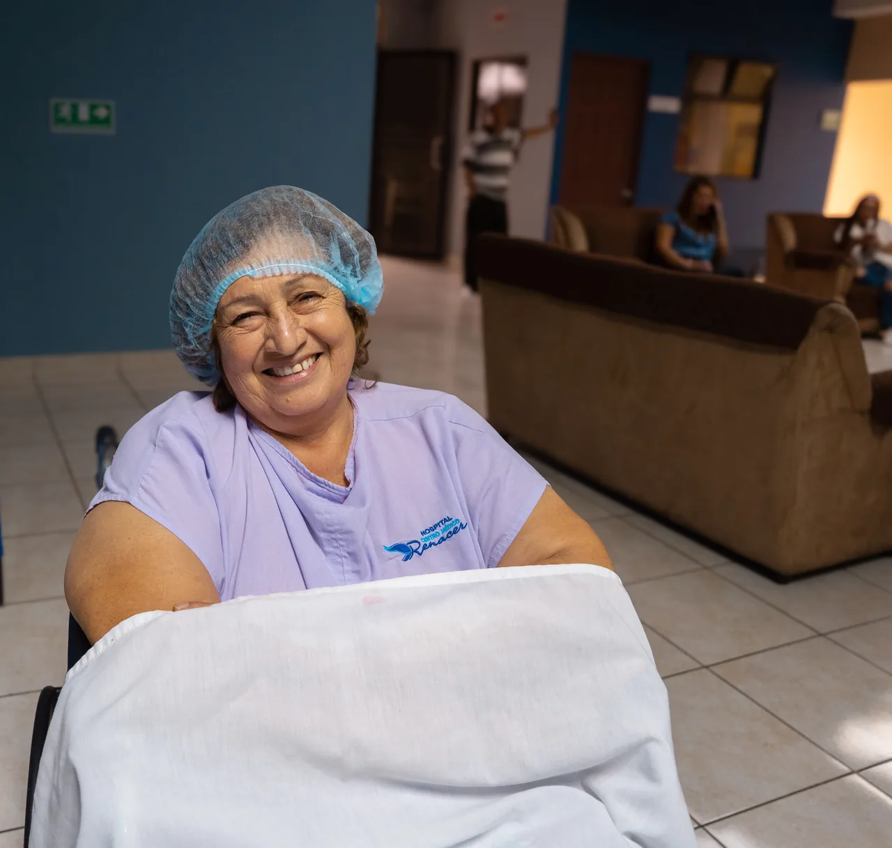

ALMA · Surgery receiptNo. 001
Cataract surgery
Sololá, year-round, with Dr. Vicky Loza
- Operating room, anesthesia, lens and Dr. Vicky Loza's services
- $350
- Total: the real cost of one surgery
- $350
Giving Tuesday Giving Tuesday ends 11:59 PM MST (America/Denver) on Dec 1, 2026 Year-end giving Help fund ALMA's 2027 surgery missions in Guatemala. Support surgery in Guatemala Your gift goes almost entirely to direct care.
Donate on Givebutter (opens in a new tab)Sponsor a surgery
Pick a surgery, see what it really costs the hospital, and sponsor it in one tap.
Every $350 is the real cost of one cataract surgery: operating room, anesthesia, lens and surgeon.
Donors have given enough to cover the real cost of 0 cataract surgeries, or 0 knee replacements, or 0 hip replacements.
The bell rings each time gifts cover one more cataract surgery ($350).
ALMA · Surgery receiptNo. 001
Sololá, year-round, with Dr. Vicky Loza
ALMA · Surgery receiptNo. 002
Centro Médico Renacer, Guatemala City
A modern private hospital with Guatemalan surgeons.
Sponsor this knee — $3,300Rounded up to help cover supplies and logistics.
Have a donor-advised fund? Give from it in 2 minutes
ALMA · Surgery receiptNo. 003
Centro Médico Renacer, Guatemala City
A modern private hospital with Guatemalan surgeons.
This October the team completed 34 knee and hip replacements.
Sponsor this hip — $3,950Rounded up to help cover supplies and logistics.
Have a donor-advised fund? Give from it in 2 minutesEvery gift helps
Gifts are processed securely on Givebutter and are tax-deductible. A Love For Missions Abroad Inc. is a 501(c)(3) nonprofit, EIN 83-2378971. Care continues in 2027, with missions in April, June and October.
A gift for someone you love
Give in their name, then print a card to hand them.
Donor-advised funds, checks and IRAs
Already set aside money for charity? Recommend a grant to ALMA in about two minutes.
Some DAF providers have a minimum grant amount.
Please let us know your name in the grant note so we can thank you.
Also for IRA Qualified Charitable Distributions and DAF checks.
Make checks payable to:
A Love For Missions Abroad Inc.
Mail to:
A Love For Missions Abroad Inc.
3272 North Alta Court
Coeur d'Alene, ID 83815
Memo (optional): "Surgical missions" plus your email so we can send a receipt.
If you are 70½ or older, you may be able to make a Qualified Charitable Distribution (QCD) by asking your IRA custodian to send a gift directly to ALMA.
Payable to: A Love For Missions Abroad Inc. · EIN: 83-2378971 · Mail to: 3272 North Alta Court, Coeur d'Alene, ID 83815
A QCD must go directly from the IRA trustee to the charity. For 2026, the IRS exclusion limit is $111,000 per eligible individual (IRS Notice 2025-67). A QCD can count toward a required minimum distribution. You generally cannot also deduct the excluded amount as a charitable contribution. Please consult your tax advisor or IRA custodian. ALMA cannot give tax advice.
ALMA is a 501(c)(3). EIN 83-2378971. Consult your tax advisor about your situation.